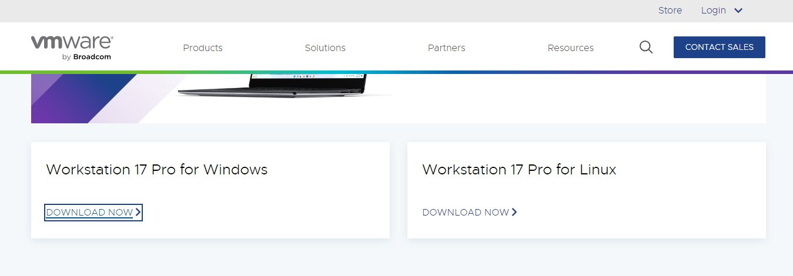
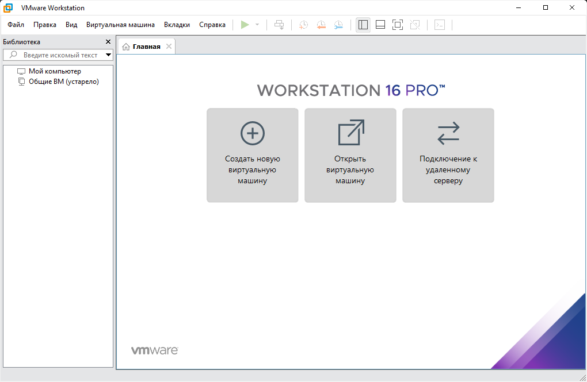

Установка Windows 3.11 на VMware
Загрузить Windows 3.11 можно по этой ссылке: тык
Шаг 1: Установка VMware
Скачайте и установите программу VMware на свой компьютер. Вы можете найти её на официальном сайте VMware.
Шаг 2: Создание новой виртуальной машины
Нажмите на кнопку "Create New Virtual Machine" (Создать новую виртуальную машину) в главном окне VMware.
Шаг 3: Настройка ресурсов виртуальной машины
Установите количество оперативной памяти, которое хотите выделить для виртуальной машины.
Выберите опцию "Use bridged networking" (Использовать мостовое соединение) для доступа к сети.

Шаг 4: Установка Windows 3.11
Запустите виртуальную машину, выбрав созданную вами виртуальную машину и нажав на кнопку "Power on this virtual machine" (Включить эту виртуальную машину).

Вставьте установочный диск Windows 3.11 в виртуальный CD/DVD-привод.